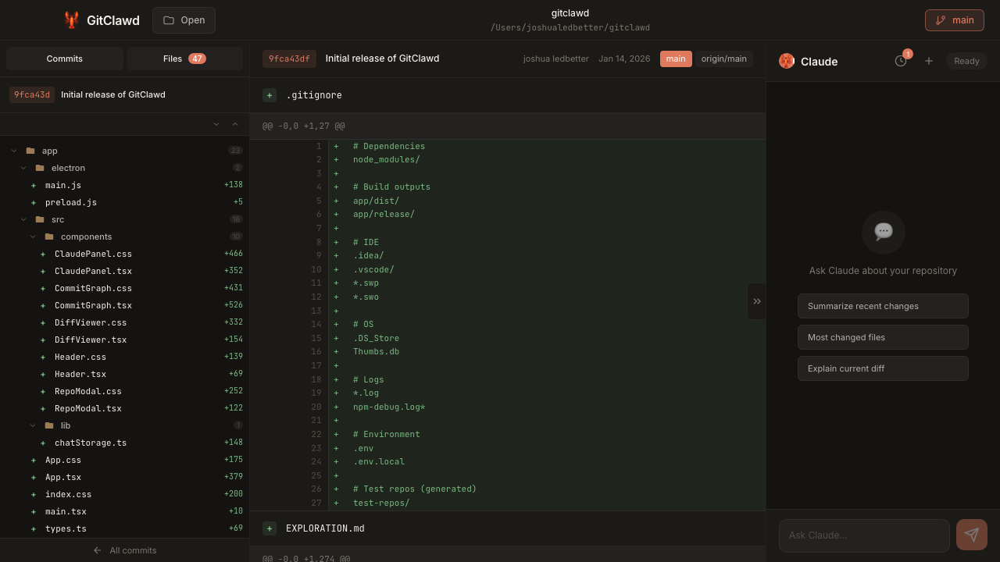

Git client with Claude built in
A visual Git client where you can ask Claude about your code. Understand commits, explore history, review changes.

Features
Ask Claude anything
Select a commit and ask what it does. Explain diffs, find patterns, summarize changes.
Visual commit graph
See your branch history with colored lanes. Click any commit to see its changes.
Syntax-highlighted diffs
Browse changed files with proper highlighting. Expand hunks, jump between files.
Persistent chat
Conversations saved per repository. Pick up where you left off.
Getting started
# Clone the repo git clone https://github.com/ledbetterljoshua/gitclawd.git cd gitclawd # Install dependencies cd web && npm install cd ../app && npm install # Set your API key export ANTHROPIC_API_KEY=your-key # Start the server (terminal 1) cd web && node server.js # Start the app (terminal 2) cd app && npm run electron